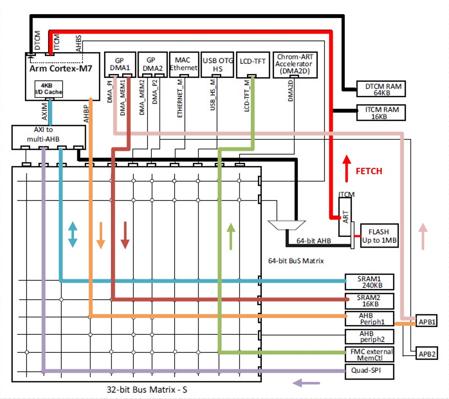
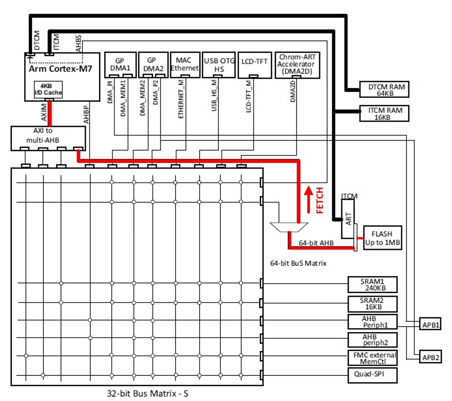

Cling 🔨, Cling 🔨, Zzzou 🪚, Zzzou 🪚, Bom 🔨, Bom 🔨, ..., pfffiou 😮💨 !
Nous y voilà, la Fabrique du MCU est enfin prête pour son premier article 🥰. Cela étant fait, nous allons enfin pouvoir commencer à étudier l'architecture de nos composants préférés, "ou détestés pour la plupart", les MCUs.
Le sujet est vaste, très vaste. C'est pourquoi, pour commencer, j'ai décidé de me concentrer sur les 4 notions essentielles que sont les périphériques, la mémoire, les bus de communication et les matrices d'interconnexion.
Mais avant ça, comme tout article qui se respecte un minimum, commençons par les bonnes vieilles définitions. Ça fait toujours mieux !
1. Définitions
Un microcontrôleur ou MCU est un circuit électronique constitué d'un CPU, d'une ou plusieurs mémoires et d'un ensemble de périphériques.
On le distingue de son grand frère le microprocesseur (MPU) par une fréquence de fonctionnement plus faible, une consommation moindre, une architecture simplifiée et l'intégration des mémoires et des périphériques à l'intérieur de la puce.
On utilisera généralement un MCU pour des applications embarquées demandant des performances réduites alors que le MPU sera réservé aux applications demandant des performances élevées.
💬
Voilà, simple non ! On pourrait comparer un MCU à une p'tite berline alors qu'un MPU c'est la sportive qui va de 0 à 100 en une seconde et demie !
Allez, trêve de plaisanterie et demandons-nous comment fonctionnent ces MCU ?
2. L'architecture du MCU
C'est une très bonne question. D'ailleurs, l'image ci-dessous nous présente l'architecture des familles de composants STM32F75xxx et STM32F74xxx :

2-1. Le CPU
En haut à gauche, on observe l'organe central du composant, le CPU pour "Central Process Unit". Nous ne l'étudierons pas en détail, car un chapitre entier lui sera consacré. L'important à retenir est que sa mission est d'exécuter un programme informatique stocké dans une mémoire.
2-2. La mémoire
En parlant mémoire, on observe que notre MCU en possède plusieurs :
- ✔ La première est une mémoire persistante ou non-volatile (mémoire FLASH). C'est généralement ce type de mémoire qu'on utilise pour stocker le programme informatique, car elle n'est pas effacée lorsque l'alimentation disparaît.
- ✔ Les autres sont des mémoires non-persistantes ou mémoires volatiles. Ces mémoires (SRAM1, SRAM2, DTCM RAM et ITCM RAM) sont beaucoup plus rapides que les mémoires FLASH et sont généralement utilisées pour stocker les variables du programme.
💬
On remarque que l'ensemble des mémoires volatiles peuvent être accédées par le CPU, mais aussi par des périphériques comme la DMA1, l'USB ou encore le périphérique LCD-TFT. Cette notion est importante et nous y reviendrons par la suite !
2-3. Les périphériques
Un périphérique est un dispositif électronique relié au MCU qui lui ajoute de nouvelles fonctionnalités. Il permet au CPU d'exécuter des fonctions alternatives comme envoyer un octet sur une liaison série (UART), acquérir une donnée analogique (ADC) ou encore générer un nombre aléatoire (RNG). Il existe de nombreuses variétés de périphériques et leur fonctionnement sera abordé plus en profondeur dans notre chapitre sur les registres.
💬
On remarque tout de même la présence de deux périphériques en bas à droite de la figure, le périphérique QuadSPI et le périphérique FMC (Flexible Memory Controller). Dans la situation ou la quantité de mémoire du système ne serait pas suffisante, ces périphériques nous permettraient de relier une ou plusieurs mémoires externes à notre CPU en adaptant les bus de communication. Pratique non 😉 ?
2-4. Les bus de communication
Un bus de communication est une voie de communication contenant une ou plusieurs lignes de données. Sa mission est de transporter une information d'un point A à un point B. Ils peuvent être unidirectionnel, bidirectionnel, synchrone ou asynchrone, single-point ou multi-points et bien plus encore. Bref, il existe une multitude de topologies et on les catégorise en deux grandes familles :
- ✔ Les bus série. Ce sont des bus de taille réduite possédant un nombre de broches limitées. De par leur structure restreinte et l'absence de broches dédiée, les données protocolaires (adresse, état, ...) doivent souvent être transférées les unes à suites des autres sur les mêmes lignes. La bande passante de la liaison est alors automatiquement limitée. Les bus série les plus connus sont les bus UART, I2C et SPI.
- ✔ Les bus parallèles. Ils sont beaucoup plus complexe que les bus série, il existe de nombreuses variantes. Ils sont constitués de plusieurs lignes de données (8, 16, 32, et même 64 lignes), de plusieurs lignes d'adresse et d'un ensemble de signaux de contrôle. Ils ont une taille très importante et sont très rapides. Ils sont utilisés dans les applications où un flux de données élevé est nécessaire comme par exemple le cadencement d'un CPU ou d'une mémoire 😇.
On observe que notre MCU possède 3 bus principaux (DTCM, ITCM et AXIM) et plusieurs bus secondaires. Certains bus (AHB, APB1 et APB2) relient le CPU à un composant du MCU (mémoire ou périphérique). D'autres bus (DMA1, DMA2, ETHERNET, etc.) relient directement un périphérique vers une mémoire. Les liaisons peuvent être directes (bus DTCM), réalisées par le biais d'une passerelle (AXI to multi-AHB) ou interconnectées par le biais d'une des 2 matrices d'interconnexion (32bits ou 64bits).
2-5. Les matrices d'interconnexion
Le rôle d'une matrice d'interconnexion est d'arbitrer les accès simultanés entre les différents intervenants d'un bus de communication selon un algorithme donnée.
Plusieurs algorithmes d'attribution existent. Celui utilisé par notre composant est un algorithme est de type Round-Robin. Il consiste à partager équitablement le bus en l'attribuant à chaque entité le demandant pendant une durée déterminée.
Il existe bien d'autres algorithmes, les plus connus étant ceux basés sur la priorité, ou encore ceux basés sur l'ordre d'arrivée (FIFO).
2-6. Un premier bilan
💬
L'objectif de cette partie était d'introduire le vocabulaire et les organes principaux de notre MCU. Je suis resté délibérément vague sur leur constitution afin de ne pas vous noyer avec un excès d'information. Cependant, le peu d'information que je vous ai déjà communiqué et suffisant pour que l'on s'attaque au fonctionnement de notre MCU 😉.
3. Le fonctionnement du MCU
3.1. Le rôle
💬
Le rôle d'un MCU est simple. Il consiste à exécuter un programme informatique.
Dans la suite de ce paragraphe, nous allons donc nous attaquer à l'ensemble des mécanismes internes mis en oeuvre pour exécuter le dit programme.
3.2. Un programme simple
Afin de mieux appréhender le fonctionnement du MCU, je vous propose de partir sur un exemple de programme simple et vraiment original 🙈 : l'incrémentation.
Commençons par analyser le pseudo-code suivant :
/* La variable globale ci-dessous est déclarée dans la mémoire SRAM1 à l'adresse 0x20010000 */ uint32_t myVar = 0; ... /* Actualisation de la valeur de la variable */ myVar++; ...
La variable globale myVar est initialisée à l'adresse 0x20010000 par le linker et plus loin dans le programme, celle-ci est incrémentée. Rien de bien compliqué.
3.3. Une ligne peut en cacher plusieurs ...
Une incrémentation est en fait constituée d'une lecture, d'une modification et d'une écriture. Nous pouvons traduire la ligne de code ci-dessus par les instructions assembleurs suivantes :
/* 1. On charge l'adresse de la variable MyVar dans R0 */ LDR R0, =0x20010000 /* 2. On charge la valeur présente à l'adresse de MyVar dans R1 */ LDR R1, [R0] /* 3. On incrémente d'une unité le registre R1 */ ADD R1, R1, #0x01 /* 4. Enfin, on enregistre la valeur de R1 à l'adresse de MyVar */ STR R1, [R0]
A noter que les registres R0 et R1 sont des espaces mémoire à l'intérieur même du CPU. Dans notre situation, ils servent de zone de stockage temporaire. Nous les étudierons plus en détail dans notre article dédié au CPU.
❔
Euh, le passage en assembleur, c'était vraiment nécessaire ?
Oui, car le processeur ne comprend pas les langages évolués comme le C, mais uniquement un jeu d'instructions restreint. Le nôtre peut d'ailleurs être retrouvé dans le document "Arm Cortex-M7 Devices Generic User Guide (REV. r1P2)" au §3. L'objectif ici n'est pas de comprendre l'assembleur, mais plutôt de comprendre comment le CPU interprète un programme informatique.
💬
Un programme informatique n'est rien d'autre qu'une suite d'instructions exécutées tour à tour par le CPU. Chaque instruction indique au CPU l'opération qu'il doit réaliser.
L'assembleur étant très proche du langage machine, il est donc bien adapté à notre cas d'emploi.
3.4. Une machinerie bien rodée
Cela étant dit, nous pouvons commencer à analyser le séquencement des flux internes du MCU lors de l'exécution de notre incrémentation :
- ✔ Tout d'abord, le CPU doit aller chercher l'instruction à exécuter. Il réalise donc une lecture dans la mémoire FLASH en utilisant le bus ITCM. Le CPU décode l'instruction numéro 1 et l'exécute en chargeant l'adresse de myVar (0x20010000) dans le registre R0.
- ✔ La première instruction étant exécutée, le CPU passe à la suivante en réalisant une nouvelle lecture dans la mémoire FLASH. On dit que le CPU fetch l'instruction (ici LDR R1, [R0]). Il la décode et s'aperçoit que la valeur de myVar doit être récupérée et stockée dans R1. Il réalise donc une lecture à l'adresse de myVar (0x20010000). Cette adresse correspond à la mémoire SRAM1. Il réalise alors un accès via le bus AXIM en passant par la matrice d'interconnexion 32 bits. Lorsque la lecture est terminée, le CPU stocke la valeur obtenue dans le registre R1.
- ✔ Ensuite, le CPU continue son travail en fetchant la troisième instruction. Cette instruction (ADD) ne nécessite aucun accès mémoire. Le CPU incrémente juste d'une unité le registre R1.
- ✔ Enfin, après le fetch de la dernière instruction, le CPU stocke la valeur de R1 à l'adresse de myVar de la même manière que précédemment. Il réalise une écriture dans la mémoire SRAM1 en utilisant le bus AXIM.
La représentation visuelle ci-dessous permet de mieux appréhender les phénomènes rencontrés :

Le bus rouge représente le fetch des instructions par le CPU et le bus turquoise les accès sur la mémoire RAM1. Aucun flux externe n'est représenté pour l'instruction ADD, car celle-ci est réalisée à l'intérieur du CPU.
Bien que l'exemple utilisé soit très simple, il présente les 2 principes fondamentaux de l'exécution d'un programme que sont le fetch d'instruction et les accès mémoire. Cependant, notre description est simpliste et correspond à un processeur primitif. De nos jours, ceux-ci sont devenus tellement performants qu'ils spéculent sur les prochaines instructions à exécuter (prefetch) et sur les prochains accès mémoire à réaliser. Mais ça, c'est une autre histoire 😉.
3.5. Un CPU, mais pour quoi faire ?
Nous venons de voir à quoi ressemblait le séquencement d'un programme simple ne faisant intervenir que le CPU. À titre d'exemple, pour des programmes plus complexes avec plusieurs intervenants, les flux de données deviennent très vite compliqués comme en témoigne la figure ci-dessous :

Vous vous souvenez que je vous avais dit que les accès mémoires peuvent se produire depuis le CPU, mais aussi depuis un périphérique. Bah là, nous sommes exactement dans cette situation.
En parallèle des requêtes du CPU sur les mémoires FLASH, QuadSPI et sur les périphériques ABP1, deux nouveaux intervenants viennent manipuler les mémoires indépendamment du CPU :
- ✔ Le périphérique LCD-TFT vient à intervalle régulier récupérer une image stockée dans une mémoire externe pour l'afficher sur un écran.
- ✔ Le moteur DMA1 vient par l'intermédiaire du bus DMA_P1 récupérer des données (par exemple le résultat d'une conversion analogique) pour les stocker directement dans la mémoire SRAM2 en utilisant le bus DMA_MEM1.
3.6. Le surmenage de la matrice
Les deux exemples précédents montraient des situations nominales où les transferts de données se déroulaient correctement sans aucune perturbation.
Mais faites attention, lorsque vraiment beaucoup de données transitent simultanément sur un même bus, un phénomène pénalisant nommé la congestion peut se produire. La bande passante du bus n'est alors plus suffisante pour acheminer l'ensemble des informations en temps réel. Des artefacts graphiques ou des erreurs peuvent alors apparaître et pénaliser l'expérience utilisateur.
J'y ai moi-même été confronté lors du développement du moteur graphique de Mk. Le bus permettant la communication avec une mémoire externe était sur-chargé et pouvait tout juste assurer les transferts de données (environ 4x74MB/s). Le problème est devenu critique lorsque désireux d'obtenir toujours plus, j'ai souhaité exécuter des applications localisées dans la mémoire graphique. En rajoutant un nouvel intervenant sur le bus, le périphérique LCD n'était alors plus en mesure de récupérer ses données en temps réel et des distorsions graphiques se produisaient continuellement.
Ne pouvant agir ni sur les fréquences de fonctionnement des mémoires ni sur les fréquences de fonctionnement des périphériques, la seule solution fut de diminuer la quantité de données nécessaires à l'écran. Je passais donc d'une configuration 60 Hz * 640 * 480 pixels sur 2 layers (32 bits / pixels), à une configuration 60 Hz * 640 * 480 pixels avec 1 layer en 24 bits / pixels et 1 autre layer en 32 bits / pixels.
Comme le montre l'exemple ci-dessus, pour une application donnée, il est très difficile de prédire si une congestion peut se produire ou non et malheureusement, il est encore plus difficile de l'éliminer le fait accompli. C'est pourquoi, il est essentiel de bien comprendre les mécanismes qui entrent en jeu durant l'exécution d'un programme et encore plus important de réaliser des levées de risques lorsque nécessaire. Pour autant, ne prenez pas peur, les situations où une congestion peut se produire sont plutôt rares et avec l'expérience, vous apprendrez à les flairer à 10 km à la ronde 😎.
3.7. Une architecture pour les gouverner toutes
Avant de clôturer cet article, j'aimerais vous introduire les deux architectures que sont les architectures de types Harvard et Von Neumann.
Ces architectures sont les premières à avoir vues le jour et se sont fait concurrence aux prémices de l'informatique. Elles se différencient de la manière suivante :
- ✔ L'architecture Harvard utilise des bus de données distincts pour acheminer les instructions et les données.
- ✔ L'architecture Von Neumann utilise un seul bus de données pour acheminer à la fois les instructions et les données.
❔
Mais du coup, notre architecture elle est plutôt Harvard ou Von Neumann ?
En fait, notre architecture exploite le meilleur des deux mondes. Elle est capable de fetcher les instructions depuis le bus ITCM (Harvard) mais aussi depuis le bus de données AXIM (Von Neumann). Il y a cependant quelques restrictions. Le bus ITCM est entièrement dédié au fetch des instructions et la mémoire FLASH ne peut pas être écrite depuis ce bus. Le bus AXIM lui est capable de réaliser les deux opérations, mais les accès mémoire sont partagés avec les autres entités concurrentes.

Bien que l'utilisation du bus ITCM sera toujours plus performante, l'utilisation du bus AXIM est possible pour la plupart des applications. La passerelle fournit une voie de communication dédiée et le bus AXIM est suffisamment performant pour répondre à l'ensemble des besoins dans la majorité des cas.
4. Le mini-quiz 👑
Afin de vérifier que vous avez bien assimilé toutes les notions clé de ce premier article et aussi d'en aborder de nouvelles, je vous ai préparé un petit quiz de seigneur.
4.1. Question 1
Lorsque nous avons étudié les mécanismes mis en oeuvre durant une incrémentation, nous avons vu que le fetch se produisait depuis la mémoire FLASH. D'une manière générale, l'utilisation d'une mémoire FLASH pour fetcher les instructions est-elle la meilleure solution ?
Réponse
💬
4.2. Question 2
En analysant de nouveau la figure décrivant le principe d'une incrémentation, pouvez-vous m'indiquer le mécanisme pénalisant le plus la rapidité d'exécution d'un programme ?
Réponse
💬
La vitesse d'exécution d'un programme est pénalisée par les accès mémoire. Plus le nombre d'accès sera faible plus la vitesse d'exécution d'un programme sera importante.
Afin de limiter la récurrence de ces accès, des mémoires cache sont généralement ajoutées au processeur. Notre CPU en possède d'ailleurs une de taille 4kB. Ces mémoires sont bien plus performantes que les mémoires standards mais aussi bien plus coûteuses. L'objectif d'un cache et de diminuer le nombre d'accès réalisés dans la mémoire principale. Au lieu de déclencher un accès mémoire sur le bus, le CPU interroge le cache et si l'accès mémoire a déjà été répertorié, il récupère directement la valeur stockée dans celui-ci.
Les caches étant maintenant des éléments incontournables, nous reviendrons dessus dans un chapitre dédié.
4.3. Question 3
En considérant que le fetch d'une instruction, son décodage et son traitement prennent plusieurs cycles au CPU à être réalisés, quel mécanisme pourrait-on mettre en oeuvre pour exécuter une instruction à chaque cycle d'horloge ?
Réponse
💬
La solution est de commencer à traiter la prochaine instruction à exécuter en parallèle de l'instruction courante et c'est exactement la mission de la pipeline d'exécution.
L'idée est de gagner du temps en spéculant sur la prochaine instruction à exécuter. En cas de succès, l'instruction est acceptée et exécutée, du temps est alors gagné. En cas d'échec, la pipeline est réinitialisée et doit fetcher la bonne instruction à exécutée. Le temps économisé en spéculant est alors perdu.
5. En résumé
Allez, pour terminer cette page, je vous ai résumé l'ensemble des points importants de cet article en quelques lignes :
- ✔ Un microcontrôleur est architecturé autour d'un CPU, d'une mémoire stockant le programme (FLASH), d'une mémoire stockant les données (RAM) et d'un ensemble de périphériques. Ses organes sont interconnectés par des bus de communication.
- ✔ Le rôle principal d'un microcontrôleur est d'exécuter un programme informatique. Un programme est une suite d'instructions exécutées par le processeur. Chaque CPU supporte un jeu d'instructions plus ou moins important.
- ✔ L'opération consistant à aller chercher une instruction dans une mémoire pour l'exécuter s'appelle le fetch. Lorsque les prochaines instructions à exécuter sont récupérées afin d'optimiser la vitesse d'exécution, on parlera plutôt de prefetch.
- ✔ Les accès mémoire contraignent le plus la vitesse d'exécution du processeur. Des mécanismes d'optimisation (cache) sont donc intégrés au CPU et au MCU pour réduire au maximum leurs occurrences.
- ✔ La mémoire peut être accédée par le CPU mais aussi directement par le biais d'un périphérique indépendamment du CPU.
Bon ben voilà, cet article est terminé. Il est maintenant temps de s'attaquer à la prochaine partie que j'ai nommé les registres du MCU. Dans ce nouvel article, nous découvrirons comment sont constitués ces petits espaces mémoire nous permettant de communiquer avec nos périphériques, et même qu'il est possible avec un peu d'audace et de persévérance, d'en greffer de nouveaux à notre MCU.
La réponse est non. Les mémoires non-volatiles sont des mémoires dites lentes. D'un point de vue performance, le fetch dans une mémoire RAM sera toujours plus rapide qu'un fetch dans une mémoire FLASH.
Pour optimiser la rapidité d'exécution, il est possible de transférer le code exécutable dans une mémoire RAM au démarrage et de fetcher depuis celle-ci. La mémoire RAM ITCM est d'ailleurs faite pour ça.
Néanmoins, dans 95% des applications, le transfert du programme dans une mémoire RAM ne sera pas nécessaire et je recommanderais l'utilisation de la FLASH. ST nous a d'ailleurs gâtés en ajoutant l'accélérateur ART pour optimiser la vitesse de récupération des instructions dans la mémoire FLASH.